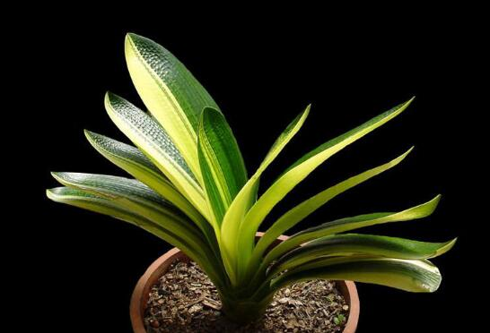

君子兰在中国的地位为什么非常崇高？
作为“梅兰竹菊”四君子中的一员，兰花自古便代表着深谷幽香，世上贤达的君子形象，它寄托了中华名族的精神与渴望，遗世而独立，代表着中华人名从古至今的生活态度。
而今天我们要介绍的这位君子有点不同，它是一位外国君子——君子兰！

一、历史起源
君子兰起源于南非，一八二三年的时候，英国人詹姆斯·博维（James Bowie）在南非东开普省发现了这种能在悬崖峭壁上顽强生存的顽强植物，并将其带回栽培在了英格兰北部诺森伯兰郡先莱夫的私人花园中。
九十年代，君子兰开始在德国、丹麦、比利时等欧洲国家传播，并在一八五四年传入了日本。
相较之下中国的君子兰历史就比较短暂了，直到一九三一年才由日本田园艺家引入东北，而开始的栽培地点只在满洲国宫廷和御花园中，直到一九四五年抗战胜利才开始在民间流传开来，到如今，也才不过七十年历史。
二、文化内涵
尽管君子兰作为外来品种在国内的发展时间较短，但无论是其外形还是内在的品格都完美的和中国自古以来崇尚的君子之风接轨，于是中国人民很快就接受了这位外来君子的存在，并为他赋予了新的意义。
1. 坚强刚毅，威武不屈
其叶如利剑出鞘，其形如不屈君子，面对寒风，它傲然挺立，面对骄阳它毫不退缩，一年四季绿意不褪，任凭风吹雨打，也依旧苍翠如故！
这是一株有骨气的植物，它曾经是周总理最爱的花卉之一，就如周总理所说的那样：“人不可傲气，但不可无骨气”，君子兰强韧的生命力完美的诠释了这一点。
2. 富贵吉祥，幸福美满
其花饱满而端庄，雍容而华贵，色彩鲜艳却不显得妖媚，自古皆是绿叶衬红花，但君子兰却是绿叶与红花交相辉映，无叶花不美，无花叶不全。
而在民间流传的一种说法中，君子兰有着一些神奇的表现。
比方说如果家庭和睦，其乐融融，那么君子兰就会长得非常旺盛，开出的花朵也是娇艳动人，反之则相反。
也有种说法，说当家中有喜之时，君子兰就会提前开花，为家里人提前带来喜讯。
3. 团结奋斗，刚正不阿
单看其形，君子兰的植株文俊而秀美，颇有君子的风范，花语之中亦有着“君子之风”的意味。
而何为君子？
公平且正义，明以其人之道还治其人之身之理，以善对善，以恶对恶既是君子！
不仅如此，君子兰的叶片密集而有序，层层叠叠的生长在短小而粗壮的茎干上，仿佛一个个人互相支撑着，齐心协力的将那朵美丽的花朵托上了天空！
而其花的更是美丽，如一支利箭直冲云霄，然后淡然绽放，一朵朵花朵散开。
这是如君子一般的团结奋斗，亦是如君子一般的刚正不阿。
4. 坚忍不拔，艰苦奋斗
君子兰的生命力极强，有些时候，就算是它的根部全部腐烂，不久之后也能重新长出，仿佛这世间没有什么能阻拦它活下去，就算是离开土壤一两个月，再次种下去，它晃一晃身子也依旧能活。
它盘踞在悬崖峭壁上，也屹立在冰天雪地里，然后将花朵在冬天孕育，盛开于冰雪还没完全消退的初春！
无数的岁月里，它就这样咬牙坚持着，一直奋斗到了今天！
5. 遗世独立，幽静素雅
兰代表着君子的幽静与贤达，仿佛幽居山谷，孤芳自赏。
君子兰亦是如此，既被冠以君子之称，也被冠以兰的美名，操守清雅，其香清逸。
它外表端庄，静立于风中，不阿谀，不争宠，随清风而舞，伴明月而眠。尽管环境恶劣，也默默承受，几十年如一日的待在这片大地上，用自己的清新淡雅的美回报着这片土地。
如此高尚的品格，是为花中君子是也。
三、如今国内发展
中国的君子兰来源于日本，有人曾说中国君子兰百分之九十五以上都含有日本君子兰的基因。
或许是民族残留问题，或许是养花人自尊在作祟，这个结论并没有得到所有人的喜欢。
有人说中国的君子兰发展了那么多年，早已形成了独立的品种，也有人说，君子兰皆是起源于非洲，不存在什么日本兰，中国兰的说法，要说基因，那怎么也是含了南非那株最古老的君子兰的基因！
尽管大家都振振有词，但不可回避的是，中国的君子兰，在发展上确实受到了日本君子兰的影响。
这里的对比很明显，关注过国内外园艺的人都知道，在君子兰流行的欧洲，这种花卉被种植在大街小巷内充当绿化。
并不是因为其不够好，而是因为其好处太多，所以才广泛种植了起来。
而在国内，君子兰变成了玩物，人们单盆栽养，将其当做了一种观赏性植物好好摆放在家中。
这确实是受到了日本君子兰文化的影响。
对日本有所了解的朋友都知道，日本是一个小国家，而其文化也已小而美著称，早期的君子兰在传播到日本之后，由于日本本土的气候并不适合君子兰在室外种植，再加上日本的插花文化早有流传，这种植物被从室外搬进了室内，脱离了大地移居到了盆栽之中，成为了单株培养的花卉。
而这种文化随着君子兰的传播也逐渐被中国的老百姓所接受，于是就渐渐发展成为了如今这副模样。
国内国外仿佛走了两个极端，外国人关注君子兰的花，而中国人追求它的叶，一方是在追求广泛的美，一方是在单一的极致美上不断追逐。
这是一种极度不平衡的发展！
好在这种情况已经逐渐得到了改善。
毕竟中国本就是一个地域辽阔的国家，日本气候不适应的情况在中国许多南方城市并不存在，随着很多有识之士认识到这个问题，君子兰在中国的发展也逐渐有了新的展开。
 上一篇
上一篇